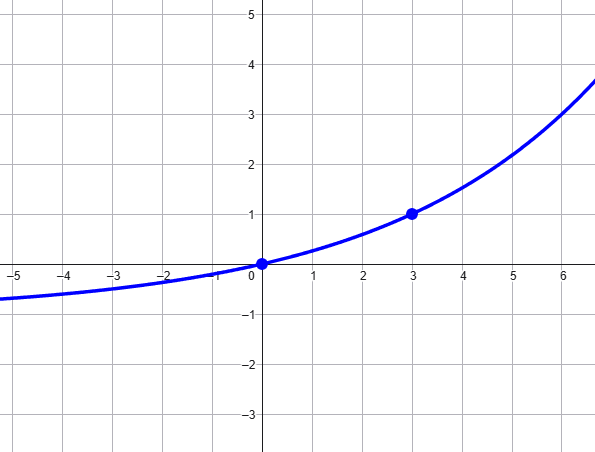
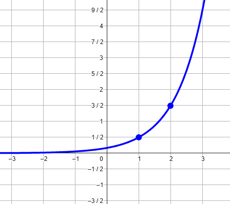
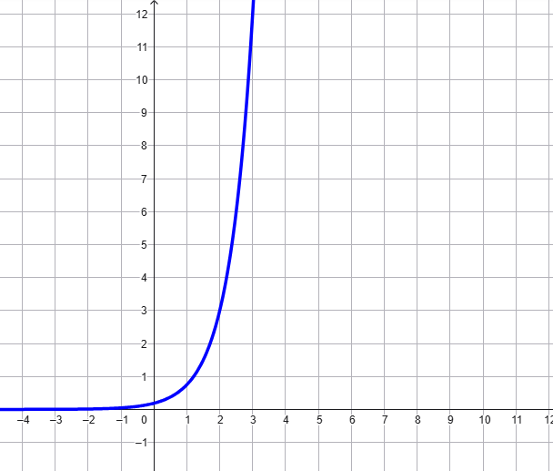

Rappresentare il grafico della funzione
\[
f(x) = 2^{\frac{x}{3}} - 1
\]
Soluzione
Prima rappresentiamo il grafico di \(g(x) = 2^{\frac{x}{3}}\) e poi lo trasliamo di un'unità verso il
basso. Otteniamo così il grafico di \(f\):

Esercizio
Rappresentare il grafico della funzione
\[
f(x) = \dfrac{3^{x - 1}}{2}
\]
Soluzione
Rappresenitamo prima il grafico di \(g(x) = 3^{x - 1}\). Successivamente applichiamo una
compressione verticale di fattore \(2\), ottenendo così il grafico di \(f\), che è il seguente.

Esercizio
Rappresentare il grafico della funzione
\[
f(x) = 3 \cdot 4^{x -2}
\]
Soluzione
Dopo aver rappresentato il grafico di \(4^{x - 2}\) gli applichiamo una dilatazione
verticale di fattore \(3\). Otteniamo così il grafico della funzione \(f\), che è il seguente.

Esercizio
Stabilire la legge che definisce la funzione rappresentata dal seguente
grafico